fx-ct-scene-cut at 0.9 s; RGBA MAE8/p99 [[94.79663628472223, 156], [96.15219184027778, 157], [95.73799913194445, 157], [0, 0]]

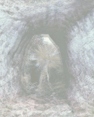
Diagnostic only. Shared shaders, owner limits and production frames remain unchanged. Images: mobile / candidate / heatmap.
fx-ct-scene-cut at 0.9 s; RGBA MAE8/p99 [[94.79663628472223, 156], [96.15219184027778, 157], [95.73799913194445, 157], [0, 0]]

fx-ct-scene-cut at 1.5 s; RGBA MAE8/p99 [[93.98615451388889, 156], [95.41380208333334, 158], [94.89483506944444, 156], [0, 0]]

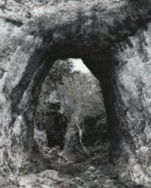
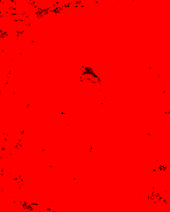
fx-ct-scene-cut at 2.1 s; RGBA MAE8/p99 [[93.57389322916667, 148], [95.00844184027778, 150], [94.51569010416667, 148], [0, 0]]

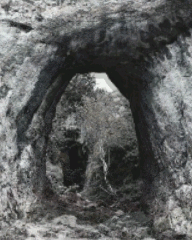
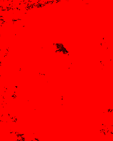
fx-ct-negative-panels at 2.1 s; RGBA MAE8/p99 [[47.11137152777778, 206], [50.107769097222224, 223], [64.93532986111111, 247], [0, 0]]

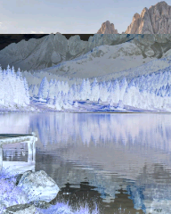
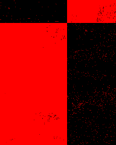
fx-cr-signal-lost at 2.1 s; RGBA MAE8/p99 [[35.80091145833333, 132], [41.27536892361111, 134], [45.416232638888886, 148], [0, 0]]

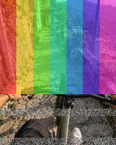
fx-ct-scene-cut at 0.3 s; RGBA MAE8/p99 [[40.97667100694444, 140], [41.658528645833336, 142], [44.72269965277778, 148], [0, 0]]

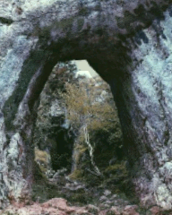
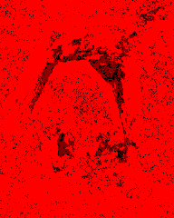
fx-ct-chaotic-heat at 1.5 s; RGBA MAE8/p99 [[29.455794270833334, 123], [35.31319444444444, 154], [18.31640625, 140], [0, 0]]

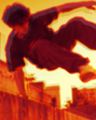
fx-cc-wiggle-flicker at 0.3 s; RGBA MAE8/p99 [[32.926974826388886, 156], [33.05201822916667, 170], [33.53608940972222, 189], [0, 0]]

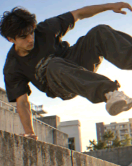
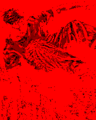
fx-ct-chaotic-heat at 0.3 s; RGBA MAE8/p99 [[24.29001736111111, 99], [25.77580295138889, 138], [15.290516493055556, 83], [0, 0]]

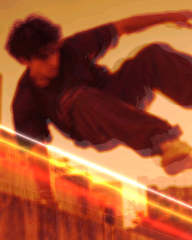
fx-cc-wiggle-flicker at 0.9 s; RGBA MAE8/p99 [[24.206944444444446, 132], [24.22775607638889, 134], [23.800737847222223, 140], [0, 0]]

fx-mt-photo-snap at 1.5 s; RGBA MAE8/p99 [[22.245269097222224, 164], [22.329296875, 166], [23.07890625, 164], [0, 0]]

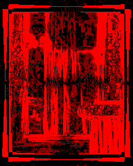
fx-ct-error-quake at 0.3 s; RGBA MAE8/p99 [[21.863368055555554, 115], [17.897092013888887, 113], [21.985091145833334, 140], [0, 0]]

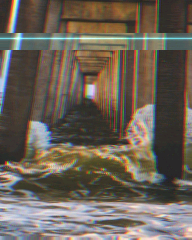
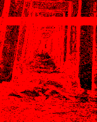
fx-ov-tr-scribble at 0.9 s; RGBA MAE8/p99 [[21.122526041666667, 222], [7.49296875, 73], [14.561197916666666, 164], [0, 0]]

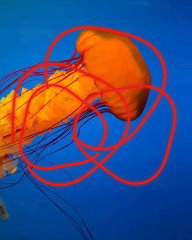
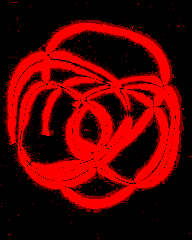
fx-ov-grain at 0.3 s; RGBA MAE8/p99 [[19.094683159722223, 58], [19.170399305555556, 56], [19.094683159722223, 58], [0, 0]]

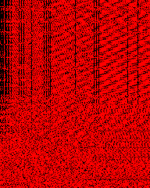
fx-cc-shiny-stack at 0.9 s; RGBA MAE8/p99 [[17.398046875, 148], [18.309852430555555, 150], [18.39125434027778, 156], [0, 0]]

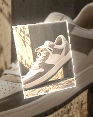
fx-cc-feverish at 0.9 s; RGBA MAE8/p99 [[6.622677951388889, 17], [18.372135416666666, 29], [14.506727430555555, 25], [0, 0]]

fx-cc-shiny-stack at 1.5 s; RGBA MAE8/p99 [[17.422048611111112, 140], [18.040169270833335, 146], [17.9169921875, 149], [0, 0]]

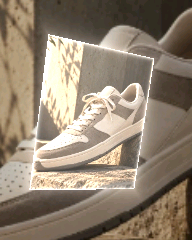
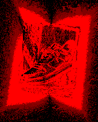
fx-ov-grain at 0.9 s; RGBA MAE8/p99 [[17.475130208333333, 58], [17.560264756944445, 53], [17.475130208333333, 58], [0, 0]]

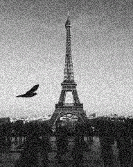
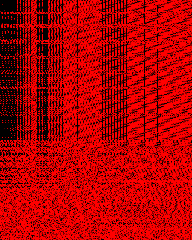
fx-ov-grain at 1.5 s; RGBA MAE8/p99 [[15.683854166666666, 57], [15.778450520833333, 53], [15.683854166666666, 57], [0, 0]]

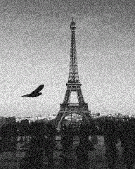
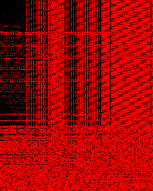
fx-mt-zoom-shake at 1.5 s; RGBA MAE8/p99 [[15.226974826388888, 74], [14.4259765625, 65], [13.638411458333334, 66], [0, 0]]

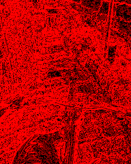